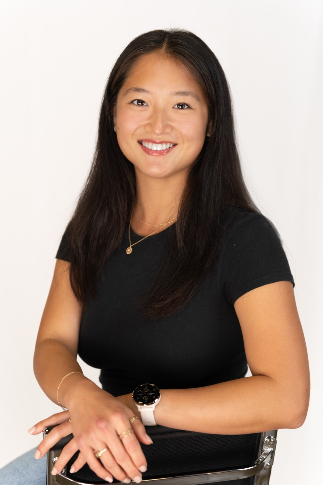

hi, i'm —
Sophie
Sun.
Strategy & Operations Manager at Thumbtack. Ex-consultant, Harvard Economics & Computer Science. I like turning ambiguous problems into things that actually ship — and most weekends, I'm somewhere between a long run and a sourdough loaf.

A few things keeping me busy.
Strategy work, mostly at the messy edges.
-
2025 — now
Manager, Strategy & Operations Thumbtack Partnerships across product, eng, design & marketing — incl. OpenAI connected-app launch. Stood up the first inbound call center (~67% conversion lift in month one).
→ -
2024 — 2025
Manager, Strategy & Operations Brightcove Led the Bending Spoons acquisition effort (90% premium). Built a revenue-mapping tool surfacing $80M+ untapped potential.
→ -
2021 — 2024
Associate Consultant, Digital L.E.K. Consulting One of the first six members of L.E.K.'s Digital practice. 20+ projects across digital strategy, commerce & ways of working.
→ -
2020
Summer Associate Keystone AI
→ -
2019
Product Manager Intern Softheon
→
A little econ, a little code.
Harvard University
A.B. Economics · secondary in Computer Science · 3.85 GPA · 2021
HCCG board · HackHarvard co-director · Women's Club Volleyball (setter)
Found outside, usually moving.
Marathons, long rides, mountains, volleyball as a setter, and slow weekends with sourdough and a journal. I guide runners with Achilles and interview prospective students for Harvard.
- marathoner
- cyclist
- hiker
- snowboarder
- setter
- sourdough baker
- journaler
- explorer
Ask thoughtful questions, come up with innovative-yet-feasible ideas, then go execute. — how I try to show up at work
Want to say hi?
Always up for a conversation about strategy, partnerships, or your favorite long run.